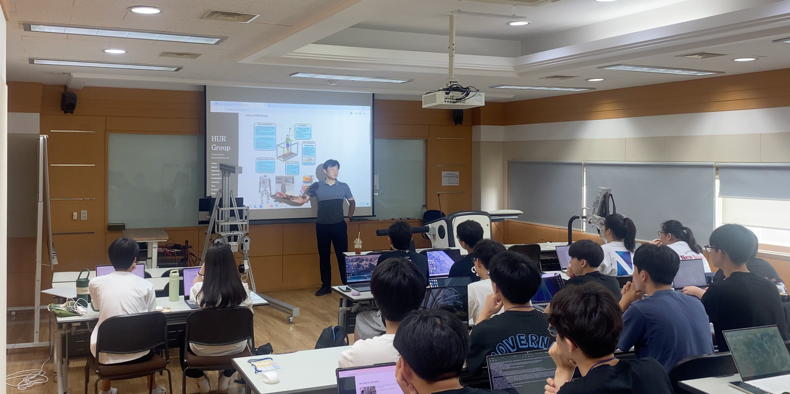
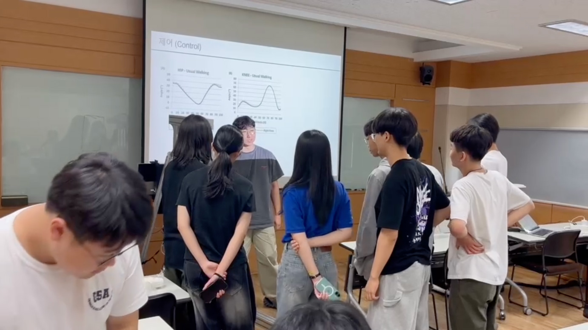
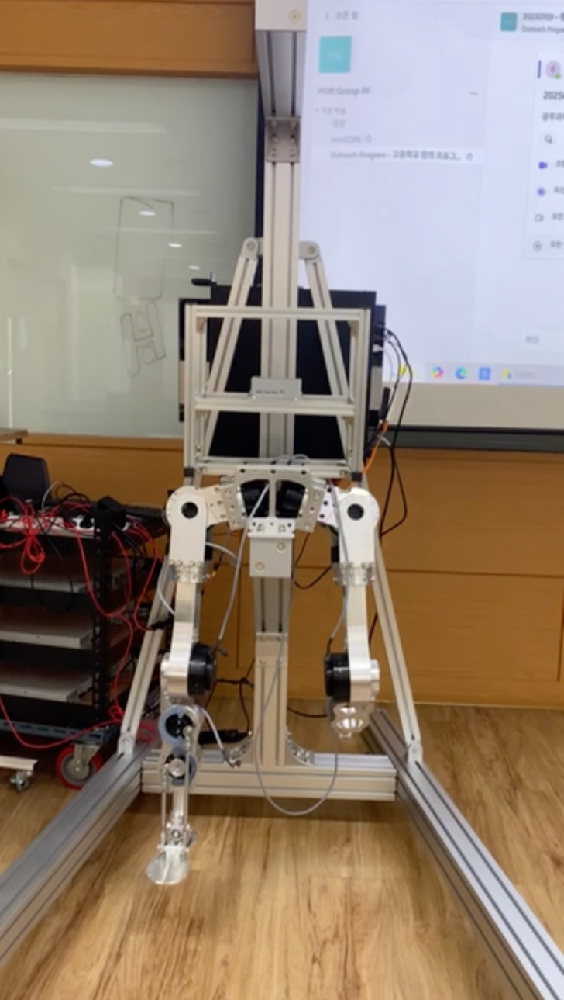

작성자: 허필원
2025년 7월 7일부터 9일까지, GIST 기계공학부 허필원 교수 연구실에서는 광주과학고등학교 1학년 학생들을 대상으로 한 창의연구 프로그램이 진행되었습니다. 이번 프로그램은 보행 로봇 연구의 두 가지 핵심 플랫폼인 외골격 로봇과 휴머노이드 로봇을 비교 탐구하는 것을 목표로 하며, 총 5개 분반에 걸쳐 약 90명의 학생들이 참여했습니다.

사진1: 강의하고 있는 허필원 교수
지스트-광주과학고 창의연구 프로그램은 고등학생들에게 최신 로봇 공학 연구를 직접 체험할 수 있는 기회를 제공하는 교육 프로그램입니다. 이번 프로그램의 연구 주제는 보행 로봇 연구: 외골격 로봇과 휴머노이드 로봇으로, 학생들이 두 가지 보행 로봇 플랫폼의 차이점과 각각의 특성을 비교 탐구할 수 있도록 구성되었습니다.
각 분반은 18~19명의 학생들로 구성되어 있으며, 지도교수인 허필원 교수와 조교 조권승(박사과정), 류형석(박사과정)이 함께 프로그램을 진행했습니다.
본 연구 주제는 두 가지 보행 로봇 플랫폼을 비교 탐구하는 것을 목표로 합니다. 학생들은 외골격 로봇을 착용해 직접 동역학 및 제어 원리를 체험하고, 휴머노이드 로봇의 보행 모션을 설계 및 구현합니다.
프로그램의 첫 번째 부분에서는 학생들이 외골격 로봇을 직접 착용하고 체험하는 시간이 마련되었습니다. 외골격 로봇은 사람의 움직임을 보조하거나 강화하는 착용형 로봇으로, 학생들은 이를 통해 로봇의 동역학과 제어 원리를 몸으로 직접 느낄 수 있었습니다. 로봇이 어떻게 사용자의 보행을 감지하고 보조하는지, 그리고 센서와 액추에이터가 어떻게 협력하여 움직임을 만들어내는지를 실습을 통해 이해했습니다.
프로그램의 두 번째 부분에서는 휴머노이드 로봇의 보행 모션을 설계하고 구현하는 활동이 진행되었습니다. 학생들은 휴머노이드 로봇이 두 발로 걷는 과정에서 필요한 균형, 자세 제어, 보행 패턴 등을 학습하고, 이를 바탕으로 실제 보행 모션을 설계해보는 기회를 가졌습니다.

사진2: 휴머노이드 로봇 주변에서 구경하고 있는 학생

사진3: 보행하고 있는 휴머노이드 로봇
3일간의 프로그램 동안 학생들은 이론 강의뿐만 아니라 실습과 실험을 통해 로봇 공학의 실제 연구 현장을 경험했습니다. 외골격 로봇을 착용해보고, 휴머노이드 로봇의 보행을 관찰하고 설계하는 과정을 통해 두 플랫폼의 차이점과 각각의 장단점을 직접 비교해볼 수 있었습니다.
학생들은 로봇 공학이 단순히 기계를 만드는 것이 아니라, 사람의 움직임을 이해하고 이를 로봇에 구현하는 복합적인 학문임을 체감할 수 있었습니다. 특히 외골격 로봇과 휴머노이드 로봇이라는 서로 다른 접근 방식이 어떻게 각각의 목적에 맞게 설계되는지 비교하는 과정에서 로봇 공학의 다양성과 깊이를 느낄 수 있었습니다.
이번 창의연구 프로그램을 통해 학생들은 로봇 공학 연구에 대한 관심과 이해를 높일 수 있었습니다. 특히 보행 로봇이라는 구체적인 주제를 통해 로봇 공학의 이론과 실무가 어떻게 연결되는지 직접 경험할 수 있는 소중한 기회가 되었습니다.
앞으로도 GIST와 광주과학고의 협력 프로그램을 통해 더 많은 학생들이 최신 로봇 공학 연구를 접할 수 있기를 기대합니다. 이번 프로그램에 참여한 학생들이 로봇 공학에 대한 열정을 키워나가며, 미래의 로봇 공학자로 성장해나가기를 응원합니다.
참가자 명단: 허필원, 조권승, 류형석, 광주과학고 1학년 학생들